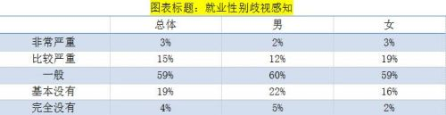
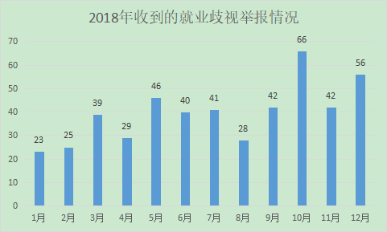
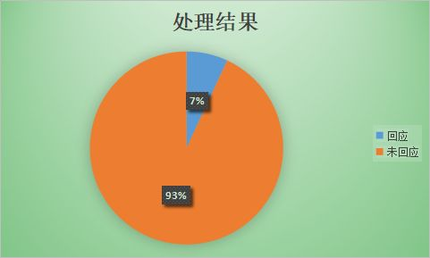

就业性别歧视现状
就业性别歧视问题在我国十分严重，2017年智联招聘的一项调查结果显示，超八成女性认为在就业中存在性别歧视。即使我国法律已经明确规定用人单位在招聘过程中不得歧视女性或者提高对女性的录用标准，但是一些企业、甚至政府单位在招聘中仍旧会玩文字游戏，认为男性优先并非是排斥女性、或者主观的认为某些职业不适合女性，因此并不算歧视。认识到女性当前所处的就业环境后，从2013年开始，陆续有热心人士向两会代表建言，邀请代表们递交呼吁女性就业机会平等的建议信。

图片来源：2017中国女性职场现状调查报告
历届两会代表观点集锦
继2018年首次将“消除就业性别歧视和身份歧视”写入政府工作报告，2019年政府工作报告再次提出“坚决防止和纠正就业中的性别和身份歧视”。除政府工作报告外，“就业性别歧视”问题也一直是历届人大代表们反映的热点。
就业性别歧视是用人单位自私心态在作
全国政协委员、河南大学校长娄源功表示，性别歧视说到底，是用人单位骨子里面表现出来是一种自私的心态在作怪。有些岗位对性别并无要求，但是就业单位却主观地认为女性能力较差，家庭观念强而不录取女性，这不仅仅是一种性别歧视，更是其社会责任心不足的明显表现。（2015年）
性倾向不同 就业权相同
全国人大代表、中华女子学院教授孙晓梅等31名人大代表，提出《反就业歧视法》立法建议，其中包含了基于性倾向、性别认同及性别表达的反歧视条款。长期从事反歧视及性别研究的中国政法大学副教授刘小楠指出：我国对于性别的理解还处于男性和女性的二元性别框架，缺乏性别多元的认识。（2015年）
遭遇就业性别歧视可以直接向法院起诉
全国人大代表、中华全国妇女联合会副主席谭琳建议，从法律层面完善就业性别歧视诉讼机制，把就业性别歧视作为一个独立案种，加大对就业性别歧视的处罚力度。女性渴望充分发挥自己的知识能力和创造力，渴望公平公正的就业环境。如果不彻底扭转观念，是对女性人力资源的一种浪费。（2018年）
国家和社会应当一起承担生育成本
全国人大代表、湖南科力尔电机股份有限公司董事长聂鹏举建议，国家和社会合理分担生育成本，减轻企业负担，减少企业用人后顾之忧。加大生育保险推广力度和范围，建立女性生育保障基金。加快推进《反就业歧视法》，针对当前的突出问题明确概念内涵，建立专门机构，建立救济措施和机制。（2019年）
政府部门要主动管就业性别歧视
全国人大代表、河南省拓城县人民医院护理部主任宋静，建议人社部门、妇联和工会应建立就业性别歧视约谈机制，主动监管就业性别歧视现象，对侵害女性劳动保护权益的用人单位和职业中介机构进行约谈和调查，督促限期纠正，并定期公布。（2019年）
消除性别歧视我们在行动
消除就业性别歧视不仅需要政府部门的监管，民间力量的监督也很重要。在过去的2018年中，@就业性别歧视监察大队（以下简称：大队）微博后台共收到了477条关于就业性别歧视的私信举报，每个月少则二十几条，多则将近70条。但这都只是冰山一角，远不及实际招聘活动中发生的性别歧视。

数据来源：@就业性别歧视监察大队
这477条私信举报除了会在大队微博账号上进行曝光外，还有一些会被志愿者在线下向相关人社局进行举报。据不完全统计，在去年的477条私信举报中，有33条举报获得了相关部门的回复，占比7%。回复情况大致可以分为三种，一是认定属于性别歧视，已要求相关用人单位进行整改；二是感谢志愿者的关心，相关人社局和妇联已经在跟进，但是未对外反馈后续；三是认为用人单位因劳动强度大等原因仅限男性的要求合理，不认为是性别歧视。

数据来源：@就业性别歧视监察大队
结语
如今，@就业性别歧视监察大队每天仍会收到一些举报。在政府工作报告和一些人大代表的良好建议还没有完全得到落实的情况下，这个微博账号将继续存在。希望终有一天，性别平等成为主流意识，每个人都能获得平等发展的机会。
参考资料
1.女性职场现状调查：超八成女性认为就业中存性别歧视
http://www.xinhuanet.com/politics/2017-03/07/c_1120579399.htm
2.尽快立法消除“中国式”就业歧视
http://zqb.cyol.com/html/2013-03/14/nw.D110000zgqnb_20130314_1-03.htm
3.娄源功：就业“性别歧视”是用人单位自私心态在作http://edu.people.com.cn/n/2015/0313/c1053-26689180.html
4.中国首例跨性别就业歧视案！两会热议《反就业歧视法》
http://www.1314xt.org/news/guonei/20160309/25100.html
5.谭琳代表：建议完善就业性别歧视诉讼机制
http://z.hangzhou.com.cn/2018/qglh/content/2018-03/11/content_6817660.htm
6.代表聂鹏举：保障女性平等就业
http://news.cqnews.net/html/2019-03/08/content_50325278.htm
7.全国人大代表宋静：建立就业性别歧视约谈机制，明确处罚措施
https://www.henan100.com/news/2019/839779.shtml